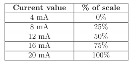
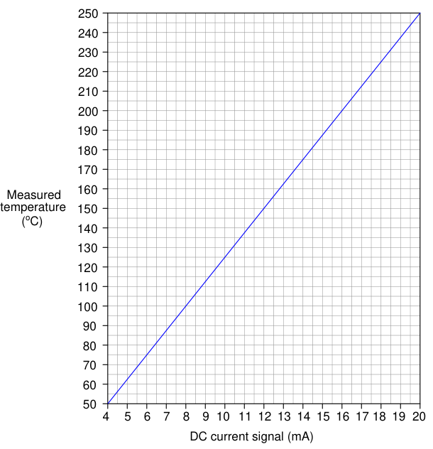
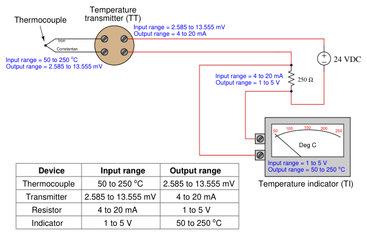
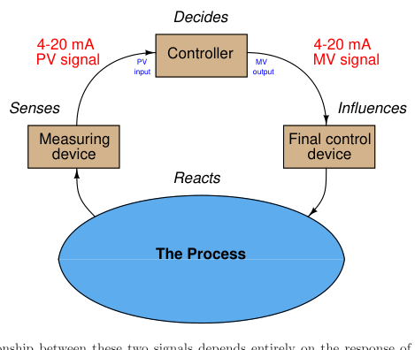

The original, as published: Tony R. Kuphaldt, Lessons In Industrial Instrumentation, 4 to 20 mA analog current signals. CC BY 4.0, https://creativecommons.org/licenses/by/4.0/. Imported as published, from https://www.ibiblio.org/kuphaldt/socratic/sinst/book/liii.pdf https://www.ibiblio.org/kuphaldt/socratic/sinst/book/liii.pdf
The most popular form of signal transmission used in modern industrial instrumentation systems (as of this writing) is the 4 to 20 milliamp DC standard. This is an analog signal standard, meaning that the electric current is used to proportionately represent measurements or command signals. Typically, a 4 milliamp current value represents 0% of scale, a 20 milliamp current value represents 100% of scale, and any current value in between 4 and 20 milliamps represents a commensurate percentage in between 0% and 100%. The following table shows the corresponding current and percentage values for each 25% increment between 0% and 100%. Every instrument technician tasked with maintaining 4-20 mA instruments commits these values to memory, because they are referenced so often:

For example, if we were to calibrate a 4-20 mA temperature transmitter for a measurement range of 50 to 250 degrees C, we could relate the current and measured temperature values on a graph like this:

This is not unlike 3-15 pounds per square inch (PSI) pneumatic signal standard, where a varying air pressure signal proportionately represents some process variable. Both 3-15 PSI and 4-20 mA signal standards are referred to as live zero because their ranges begin with a non-zero value. This “live” zero provides a simple means of discriminating between a legitimate 0% signal value and a failed signal (e.g. leaking tube or severed cable)1.
1Not all industrial measurement and control signals are “live zero” like the 3-15 PSI and 4-20 mA standards. 0 to
An important concept to grasp with all analog instrumentation is that instruments sending and receiving analog signals must be compatibly ranged in order to properly represent the desired variable. To illustrate, let us consider a temperature measurement system consisting of a thermocouple2, a temperature transmitter, a 250 ohm resistor (to convert the 4-20 mA analog signal into a 1-5 volt analog signal), and a special voltmeter functioning as a temperature indicator:

Note how the output range of each sending device matches the input range of its corresponding receiving device. If we view this system as a path for information to flow from the thermocouple’s tip to the transmitter to the resistor and finally to the voltmeter/indicator, we see that the analog output range of each device must correspond to the analog input range of the next device, or else the real-world meaning of the analog signal will be lost. This correspondence does not happen automatically, but must be established by the instrument technician building the system. In this case, it would be the technician’s responsibility to properly adjust the range of the temperature transmitter, and also to ensure the indicator’s display scale was properly labeled. Both the thermocouple and the resistor are non-adjustable devices, their input/output characteristics being fixed by physical laws.
10 volts DC is a common “dead zero” signal standard, although far more common in environmental (building heating and cooling) control systems than industrial control systems. I once encountered an old analog control system using −10 volts to +10 volts as its analog signal range, which meant 0 volts represented a 50% signal! A failed signal path in such a system could have been very misleading indeed, as a 50% signal value is not suspicious in the least. 2This is a temperature sensing element consisting of two different metal wires joined together, which generate a small voltage proportional to temperature. The correspondence between junction temperature and DC millivoltage is very well established by scientific testing, and so we may use this principle to sense process temperature.
DC current signals are also used in control systems to command the positioning of a final control element, such as a control valve or a variable-speed motor drive (VSD). In these cases, the milliamp value does not directly represent a process measurement, but rather how the degree to which the final control element influences the process. Typically (but not always!), 4 milliamps commands a closed (shut) control valve or a stopped motor, while 20 milliamps commands a wide-open valve or a motor running at full speed. Final control elements often are equipped with adjustable ranges so that an accurate correspondence between the analog signal and the desired control action may be ensured.
Thus, most industrial control systems use at least two different 4-20 mA signals: one to represent the process variable (PV) and one to represent the command signal to the final control element (the “manipulated variable” or MV):

The relationship between these two signals depends entirely on the response of the controller. There is no reason to ever expect the PV and MV current signals to be equal to each other except by chance, for they represent entirely different variables. In fact, if the controller is reverse-acting, it is entirely normal for the two current signals to be inversely related: as the PV signal increases going to a reverse-acting controller, the output signal will decrease. If the controller is placed into “manual” mode by a human operator, the output signal will have no automatic relation to the PV signal at all, instead being entirely determined by the operator’s whim.
A 4 to 20 mA current signal represents some signal along a 0 to 100 percent scale. Usually, this scale is linear as shown by this graph:
Being a linear function, we may use the standard slope-intercept linear equation to relate signal percentage to current values:
y = mx + b
Where, y = Output from instrument x = Input to instrument m = Slope b = y-intercept point (i.e. the live zero of the instrument’s range)
Once we determine suitable values for m and b, we may then use this linear equation to predict any value for y given x, and vice-versa. This is very useful for predicting the 4-20 mA signal output of a process transmitter, or the expected stem position of a 4-20 mA controlled valve, or any other correspondence between a 4-20 mA signal and some physical variable. Before we may use this equation for any practical purpose, we must determine the slope (m) and intercept (b) values appropriate for the instrument we wish to apply the equation to. Next, we will see some examples of how to do this.
For the linear function shown, we may determine the slope value (m) by dividing the line’s rise by its run. Two sets of convenient points we may use in calculating rise over run are 4 and 20 milliamps (for the rise), and 0 and 100 percent (for the run):


To calculate the y-intercept (b), all we need to do is solve for b at some known coordinate pair of x and y. Again, we find convenient points3 for this task at 0 percent and 4 milliamps:

b = 4

Now we have a complete formula for converting a percentage value into a milliamp value:

We may now use this formula to calculate how many milliamps represent any given percentage of signal. For example, suppose we needed to convert a percentage of 34.7% into a corresponding 4-20 mA current. We would do so like this:

y = 9.552
Thus, 34.7% is equivalent to 9.552 milliamps in a 4-20 mA signal range.
The slope-intercept formula for linear functions may be applied to any linear instrument, as illustrated in the following examples.